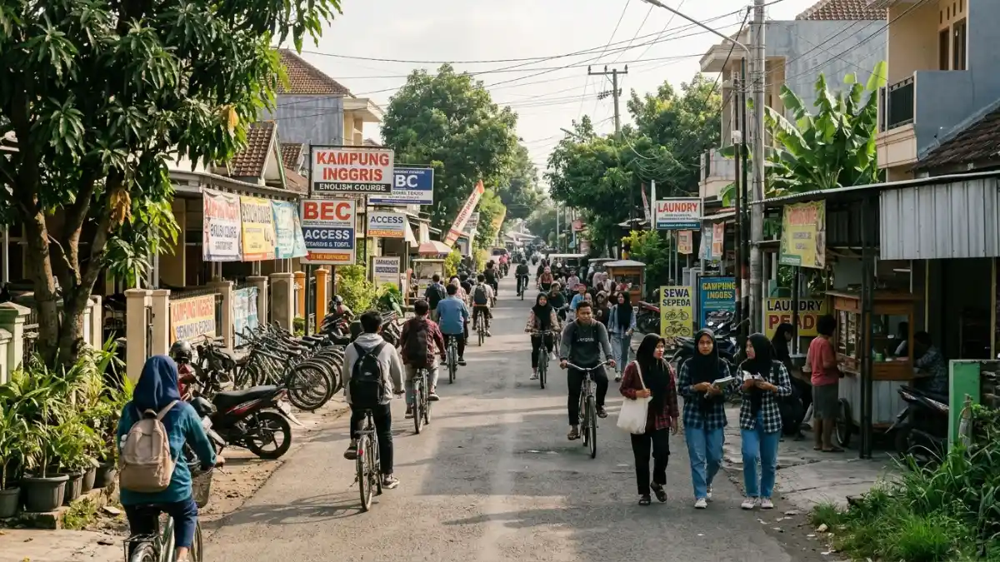

Kegiatan outbound di kawasan Pare Kediri melatih kerja sama tim,
komunikasi, dan kepemimpinan di alam terbuka. (Ilustrasi)
Kegiatan outbound di kawasan Pare Kediri melatih kerja sama tim,
komunikasi, dan kepemimpinan di alam terbuka. (Ilustrasi)
Outbound Kediri Pare adalah kegiatan belajar dan kerja sama tim di alam terbuka kawasan Pare, Kabupaten Kediri, yang cocok untuk sekolah, perusahaan, dan komunitas.
- Outbound adalah metode belajar melalui pengalaman langsung dengan permainan dan tantangan kelompok di ruang terbuka.
- Pare di Kabupaten Kediri dikenal sebagai Kampung Inggris, sehingga banyak rombongan pelajar dan peserta kursus berkunjung ke sana.
- Wisata Ubalan di Plosoklaten tercatat dikunjungi sekitar 10.000 orang dalam dua hari pertama setelah dibuka kembali pada 31 Desember 2025.
- Manfaat utama outbound meliputi kerja sama tim, komunikasi, kepemimpinan, dan kepercayaan diri.
- Keselamatan, tujuan kegiatan, dan kualitas fasilitator menjadi tiga faktor yang paling menentukan hasil.
DAFTAR ISI
- 1. Apa Itu Outbound Kediri Pare dan Mengapa Banyak Dicari?
- 2. Mengapa Kediri dan Pare Cocok untuk Kegiatan Outbound?
- 3. Siapa yang Cocok Mengikuti Outbound di Kediri Pare?
- 4. Apa Saja Manfaat Outbound bagi Peserta?
- 5. Bagaimana Alur Kegiatan Outbound Berlangsung?
- 6. Apa Saja Jenis Kegiatan Outbound yang Umum Dilakukan?
- 7. Faktor Apa yang Perlu Dipertimbangkan Sebelum Memesan Paket?
- 8. Apa Kesalahan Umum dalam Merencanakan Outbound?
- 9. Bagaimana Tips Agar Outbound Lebih Efektif dan Aman?
- 10. Apa Bedanya Outbound dengan Wisata Biasa?
- 11. Kesimpulan
- 12. FAQ
Apa Itu Outbound Kediri Pare dan Mengapa Banyak Dicari?
Outbound Kediri Pare adalah rangkaian permainan dan tantangan kelompok di ruang terbuka Kecamatan Pare, Kabupaten Kediri, yang dirancang untuk melatih kerja sama, komunikasi, dan kepemimpinan.
Kata outbound berasal dari konsep pelatihan di luar ruangan. Peserta tidak hanya mendengarkan materi, tetapi langsung mencoba, gagal, memperbaiki, lalu berefleksi. Pendekatan ini dikenal sebagai experiential learning atau belajar dari pengalaman.
Di Pare, kebutuhan outbound muncul dari dua arah. Pertama, banyak lembaga pendidikan dan perusahaan ingin menggabungkan kegiatan belajar dengan pengalaman kelompok. Kedua, kawasan Kampung Inggris Pare menarik ribuan pelajar dari berbagai daerah, sehingga kegiatan di luar kelas menjadi pelengkap yang wajar.
Kampung Inggris Pare memiliki 173 lembaga kursus, dan jumlah itu dapat berbeda pada sumber lain karena definisi lembaga yang dipakai tidak selalu sama.
Outbound di Pare umumnya dikemas dalam beberapa format, yaitu paket setengah hari, satu hari penuh, dan program menginap.
Setiap format menyesuaikan tujuan peserta, apakah untuk pengenalan, penguatan tim, atau kegiatan akhir tahun.
Mengapa Kediri dan Pare Cocok untuk Kegiatan Outbound?
Kediri dan Pare cocok untuk outbound karena akses wisata alam, ruang terbuka luas, ekosistem pendidikan Kampung Inggris, dan lokasi strategis di Jawa Timur.
Kabupaten Kediri memiliki sejumlah destinasi yang sering dikunjungi rombongan, mulai dari kawasan Gunung Kelud hingga Simpang Lima Gumul.
Menurut laporan beritajatim.com, Wisata Ubalan di Kecamatan Plosoklaten tercatat menerima sekitar 10.000 pengunjung dalam dua hari pertama setelah dibuka kembali pada 31 Desember 2025.
Angka itu menunjukkan tingginya minat masyarakat terhadap wisata ruang terbuka di wilayah Kediri pada awal 2026.
Wisata sejarah juga ikut mendukung. Menurut RRI Kediri pada April 2026, pengunjung Candi Surowono di Kecamatan Badas stabil pada kisaran 1.000 orang per bulan.
Kombinasi wisata alam, sejarah, dan pendidikan membuat rombongan dapat menyusun agenda yang beragam dalam satu perjalanan.
Faktor lain adalah ketersediaan penunjang. Kawasan Pare sudah terbiasa menerima rombongan, sehingga penginapan, tempat makan, dan transportasi lokal relatif mudah dijangkau.

Kawasan Kampung Inggris Pare di Kabupaten Kediri menjadi daya tarik utama bagi pelajar dan rombongan untuk kegiatan edukasi serta outbound. (Ilustrasi)Siapa yang Cocok Mengikuti Outbound di Kediri Pare?
Outbound di Kediri Pare cocok untuk pelajar, mahasiswa, karyawan, komunitas, keluarga besar, dan peserta kursus yang ingin memperkuat kerja sama dan percaya diri dalam kelompok.
Setiap kelompok membawa kebutuhan yang berbeda. Sekolah biasanya menekankan karakter, disiplin, dan kekompakan kelas. Perusahaan menekankan komunikasi antarbagian, kepemimpinan, dan penyelesaian masalah.
Komunitas dan lembaga kursus sering memakai outbound untuk mencairkan suasana di antara peserta baru.
Usia dan kondisi fisik peserta perlu dipertimbangkan. Aktivitas untuk anak sekolah dasar berbeda dari aktivitas untuk karyawan dewasa, baik dari sisi tingkat tantangan maupun durasinya.
Penyelenggara yang baik akan menanyakan jumlah peserta, rentang usia, dan kondisi kesehatan sebelum menyusun rangkaian kegiatan.
Apa Saja Manfaat Outbound bagi Peserta?
Manfaat outbound meliputi peningkatan kerja sama tim, komunikasi, kepemimpinan, kepercayaan diri, dan kemampuan memecahkan masalah melalui pengalaman langsung yang diikuti sesi refleksi.
Sejumlah penelitian di Indonesia membahas manfaat ini. Kajian pada pegawai rumah sakit yang dimuat di jurnal Universitas Pendidikan Indonesia menyimpulkan bahwa metode outbound berbasis experiential learning membantu kerja sama tim lebih efektif.
Penelitian lain pada pegawai instansi daerah di Sulawesi Selatan melaporkan kenaikan kohesivitas tim setelah pelatihan outbound.
Namun, hasil penelitian tidak selalu seragam. Ada studi pada sebuah perusahaan yang tidak menemukan pengaruh signifikan team building terhadap kohesivitas tim.
Artinya, manfaat outbound sangat bergantung pada rancangan kegiatan, kualitas fasilitator, dan sesi refleksi setelah permainan.
Manfaat praktis yang sering dirasakan peserta adalah suasana kelompok yang lebih cair, pembagian peran yang lebih jelas, dan keberanian menyampaikan pendapat.
Outbound tidak otomatis menyelesaikan masalah organisasi, tetapi dapat membuka ruang bagi kelompok untuk saling mengenal.
Bagaimana Alur Kegiatan Outbound Berlangsung?
Alur outbound yang baik terdiri dari pembukaan dan pengarahan keselamatan, pemanasan, permainan inti, sesi refleksi, lalu penutupan dengan kesimpulan dan rencana tindak lanjut.
Pembukaan menjelaskan tujuan dan aturan. Fasilitator menyampaikan batas area, tanda berhenti, dan prosedur bila ada peserta merasa tidak nyaman. Tahap ini penting karena menentukan rasa aman peserta.
Pemanasan berupa permainan ringan untuk mencairkan suasana. Setelah itu, permainan inti dijalankan secara bertahap dari yang mudah ke yang lebih menantang. Setiap permainan diikuti diskusi singkat tentang apa yang terjadi dan apa pelajarannya.
Penutupan memadukan kesimpulan dengan komitmen sederhana, misalnya kebiasaan komunikasi yang akan dibawa ke kelas atau kantor. Tanpa tahap ini, kegiatan mudah berhenti sebagai hiburan semata.
Apa Saja Jenis Kegiatan Outbound yang Umum Dilakukan?
Jenis kegiatan outbound yang umum meliputi permainan kelompok, tantangan rintangan, lomba antartim, simulasi kepemimpinan, dan aktivitas alam ringan yang disesuaikan dengan usia peserta.
Permainan kelompok melatih komunikasi, seperti memindahkan benda bersama tanpa menyentuh dengan tangan. Tantangan rintangan melatih koordinasi dan kepercayaan.
Lomba antartim menambah semangat kompetisi sehat, sedangkan simulasi kepemimpinan memberi kesempatan peserta bergantian memimpin.
Daftar permainan beserta tujuan setiap permainan dan contoh susunan acara dibahas lengkap pada artikel jenis permainan outbound dan contoh rundown di Kediri Pare. Pembaca yang menyusun acara sendiri sebaiknya memulai dari tujuan, baru memilih permainan yang relevan.
Faktor Apa yang Perlu Dipertimbangkan Sebelum Memesan Paket?
Sebelum memesan paket outbound, pertimbangkan tujuan kegiatan, jumlah dan usia peserta, standar keselamatan, kualitas fasilitator, fasilitas lokasi, musim kunjungan, dan rincian biaya.
Tujuan kegiatan menjadi dasar semua keputusan. Kelompok yang ingin memperkuat kekompakan memerlukan rangkaian berbeda dari kelompok yang hanya ingin rekreasi. Jumlah peserta memengaruhi kebutuhan fasilitator dan peralatan.
Biaya perlu dibaca dengan teliti. Komponen yang masuk dalam harga, seperti konsumsi, peralatan, dokumentasi, dan asuransi, sering berbeda antarpenyedia. Uraian komponen tersebut dibahas pada artikel biaya outbound di Kediri Pare dan faktor penentu harga paket.
Pemilihan penyedia juga memerlukan penilaian khusus. Cara menilai pengalaman fasilitator, kelengkapan peralatan keselamatan, dan kejelasan prosedur darurat diuraikan pada panduan cara memilih penyedia outbound di Kediri Pare.
Waktu kunjungan ikut berpengaruh. Masa libur sekolah dan akhir tahun biasanya ramai di kawasan Pare, sehingga pemesanan lebih awal membantu menjaga ketersediaan.
Apa Kesalahan Umum dalam Merencanakan Outbound?
Kesalahan umum dalam merencanakan outbound meliputi tujuan yang kabur, jadwal terlalu padat, pengabaian keselamatan, tidak ada sesi refleksi, dan pemilihan penyedia hanya berdasarkan harga termurah.
Tujuan yang kabur membuat kegiatan terasa seperti rangkaian permainan acak. Jadwal terlalu padat membuat peserta kelelahan sehingga refleksi tidak berjalan.
Pengabaian keselamatan adalah kesalahan paling berisiko, terutama pada aktivitas dengan ketinggian atau lintasan basah.
Kesalahan lain adalah tidak menyesuaikan kegiatan dengan cuaca. Kawasan Kediri dapat hujan pada musim tertentu, sehingga rencana cadangan di tempat teduh atau ruang tertutup perlu disiapkan sejak awal.
Bagaimana Tips Agar Outbound Lebih Efektif dan Aman?
Outbound menjadi efektif dan aman bila tujuan ditetapkan sejak awal, peserta diberi pengarahan keselamatan, fasilitator berpengalaman, dan setiap permainan ditutup dengan diskusi refleksi.
Tetapkan satu sampai tiga tujuan yang terukur, misalnya meningkatkan komunikasi antarbagian. Informasikan kepada peserta tentang pakaian, alas kaki, air minum, dan obat pribadi yang perlu dibawa. Pastikan fasilitator memegang prosedur pertolongan pertama.
Keselamatan di destinasi wisata juga menjadi perhatian aparat. Menurut RRI Kediri, Kapolres Kediri meninjau dua objek wisata pada 24 Maret 2026 untuk memastikan kesiapan pengamanan dan mengimbau wisatawan menjaga keselamatan.
Rombongan outbound dapat mengikuti semangat yang sama dengan menjaga barang bawaan dan mengawasi peserta muda.
Setelah kegiatan, kumpulkan masukan singkat dari peserta. Masukan tersebut membantu penyelenggara memperbaiki kegiatan berikutnya.
Apa Bedanya Outbound dengan Wisata Biasa?
Outbound berbeda dari wisata biasa karena bertujuan belajar, dipandu fasilitator, memakai permainan terstruktur, dan diakhiri refleksi, sedangkan wisata biasa berfokus pada rekreasi.
Wisata biasa memberi kebebasan peserta menikmati pemandangan atau kuliner. Outbound menempatkan peserta pada situasi yang menuntut kerja sama, lalu membahas apa yang dipelajari.
Keduanya tidak saling meniadakan. Banyak rombongan menggabungkan sesi outbound pada pagi hari dengan kunjungan wisata pada siang atau sore hari.
Bagi rombongan yang waktunya terbatas, pilih satu bentuk sebagai prioritas. Bila tujuan utama pembinaan kelompok, outbound sebaiknya mendapat porsi waktu terbesar.
Kesimpulan
Outbound Kediri Pare paling bermanfaat ketika dirancang dari tujuan yang jelas, dijalankan dengan standar keselamatan yang ketat, dan ditutup dengan sesi refleksi bersama peserta.
Langkah praktis yang dapat dilakukan sekarang adalah menentukan tujuan kelompok, menghitung jumlah dan usia peserta, memilih waktu kunjungan, lalu membandingkan beberapa penyedia berdasarkan keselamatan dan fasilitator.